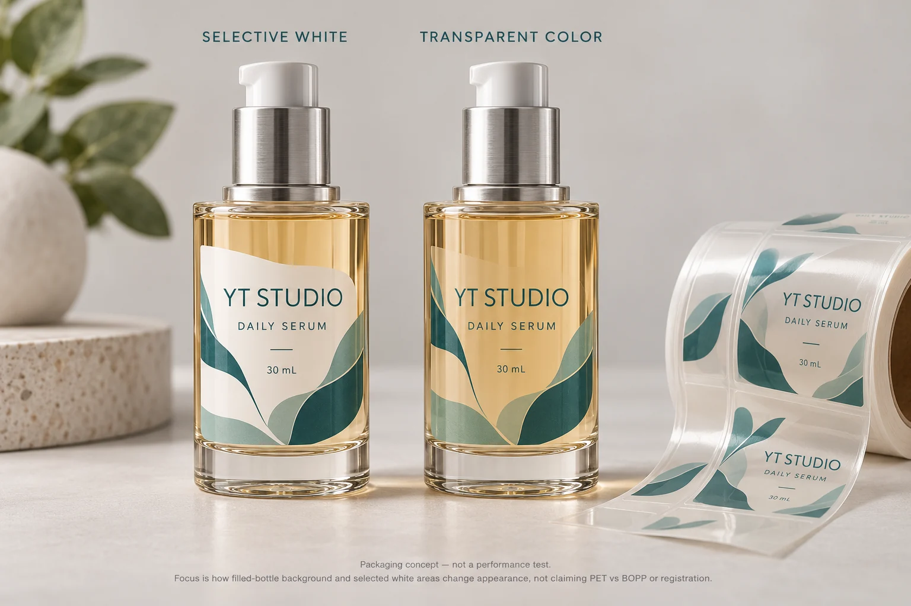
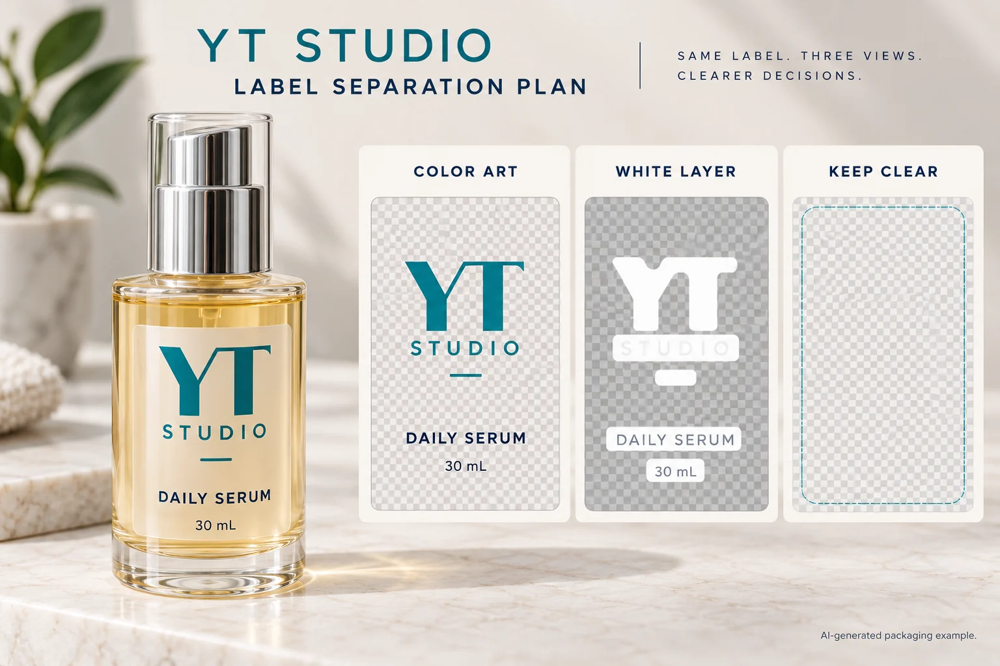

A clear serum bottle looks simple until the artwork reaches the filled pack. The wordmark that looked strong on a white screen now sits over amber liquid. Someone asks for white ink behind everything. That fixes one concern, but removes the transparency the designer wanted.
For clear cosmetic labels, decide which parts of the package should remain visible before selecting the construction. Then review the proposed film, adhesive appearance, printing and finish on the intended filled container. “Clear PET” or “clear BOPP” alone does not describe the finished look you are buying.
This guide helps a skincare brand, packaging buyer or OEM/ODM project team choose between a transparent presentation and an opaque label. It does not set print tolerances or approve a material from a photograph.

Start with what the customer must see through the label
Identify the bottle, fill color and actual label panel. Mark the areas where the product should show through: perhaps the space around a small wordmark, a botanical detail or the area between front and back panels. Keep essential copy and any technical code separate from this visual wish list.
An empty clear bottle and a filled tinted bottle are different backgrounds. A white PDF page is another background again. Ask the designer to review the actual pack reference, rather than approving transparency against whichever preview happens to look nicest.
There is a useful tradeoff here. A broad opaque panel can give a more controlled background for a busy range. A small transparent label can preserve the bottle presentation. Neither choice automatically improves adhesion, readability or printing consistency. Those decisions still need their own evidence.
Choose clear or opaque before comparing film names
| Pack and design situation | Route worth evaluating | Question before approval |
|---|---|---|
| Filled-pack appearance is central to the design | Clear film with agreed open areas | Does the filled bottle remain attractive and readable with this print layout? |
| Copy must sit against a consistent background across changing fill colors | Opaque stock or a defined opaque printed panel | Can the team accept the loss of transparency in exchange for a controlled background? |
| A brand mark needs an opaque appearance while surrounding areas stay clear | Selective white backing under identified objects | Which objects receive backing, and who prepares that separation? |
| Container changes shape during use | Construction and panel review on the used pack | Is the proposal supported for that movement, rather than only for a resting bottle? |
Do not use the last row to choose a film by general reputation. The squeezable-bottle label guide covers that separate handling decision. A familiar clear appearance is not evidence of conformability.
Make the white-ink instruction specific
Write down whether an element should be opaque white, opaque color over white, transparent color or unprinted. “Add white ink” leaves too much room for different interpretations. It does not say whether a color should stay translucent or whether the full label should become an opaque panel.
As a supplier example, Avery’s material comparison illustrates how white underprinting changes the appearance of colors on transparent materials. That explains a design mechanism. It does not establish the opacity or production capability of a YT Labels order.
Give prepress an identified artwork export and a simple appearance map. Ask who will supply the white separation and how the proposed production file will be acknowledged. Leave edge adjustments to a process-specific discussion; our white-ink edge review addresses that narrower task.

Ask for an identified construction, not a transparent-film slogan
Request the proposed face material, adhesive, protective finish and supply format by their actual specification or supplier reference. Clear PET and clear BOPP are candidate families. The reference needs to describe the construction the converter is proposing, including any relevant limitations.
The Avery Dennison explanation of pressure-sensitive labels distinguishes the face material, adhesive and liner. For procurement, the practical point is to identify the supplied combination instead of treating a face-film name as the complete order specification. Printed layers and finish also belong in the appearance review.
Ask what evidence supports the proposed construction on your container and under your application conditions. If the bottle is coated, frosted or unidentified, obtain its specification. Appearance alone does not identify the surface the adhesive will touch.
Use a transparent-label approval record
Collect the inputs below before asking the supplier to compare samples. Missing information stays visible; it should not disappear inside an email saying “approved.”
| Input | Record | How it changes the decision |
|---|---|---|
| Pack identity | Container, coating, filled-pack photo and sample reference | Establishes the intended background and application surface |
| Appearance map | Opaque, transparent-color and unprinted areas | Tells design and prepress what must remain visible |
| Construction | Face, adhesive, finish and supplier reference | Makes the proposed sample identifiable |
| Artwork | Export revision and white-layer owner | Prevents two teams preparing different versions |
| Comparison | Relevant lighting, filled pack and agreed sample preparation | Makes the appearance discussion interpretable |
| Release | Accepted reference, open issue and responsible approver | Limits approval to the evidence actually reviewed |
Complete pack identity first. Map the artwork, obtain the proposed construction and compare representative applied samples under agreed conditions. Record the accepted visual reference and any issue requiring another sample. A screen preview can support layout approval; it cannot settle the applied appearance of the finished label.
If reviewers see clouding, a localized pocket or a visible perimeter, use the clear-label appearance guide. Keep that observation and investigation separate from the initial choice to use transparency.
When an opaque label is the better purchase
Consider a hypothetical range with strongly different fill colors and dense product copy. A controlled opaque background may simplify visual approval. The brand can still use the bottle shape and an unlabelled area to show the product. Transparency does not need to win the whole panel.
A second range may use a small front label and treat the liquid color as part of its identity. It has a reason to evaluate clear film with selective backing. Its buyer should accept that the visual objective needs an applied reference; a generic material swatch is not the final pack.
For custom cosmetic and skincare labels, send the filled-container reference, label dimensions, appearance map, artwork revision and quantity per design. Identify the part of the decision still open. Prepare a project inquiry, then attach files in email or WhatsApp; the form only creates a message draft.